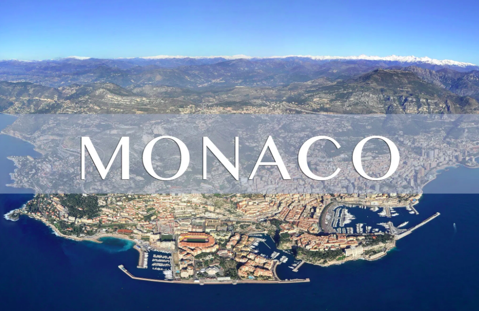

Monaco

Located between France and the Mediterranean, Monaco has become a well-known residence for the
super
wealthy. It is one of the smallest countries in the world, with about 40,000 residents – but has
a
wealth per capita of $2.1 million.
Many of those residents (about 2,700) are multimillionaires. The fact that it one of the only
countries in the world with no income tax helps to attract wealthy individuals. It also serves
as an
offshore center for Europe, drawing many high-earning financiers.
Hedge funds based in Monaco could gain from investment by wealthy families in the principality,
who
have up to €400bn of capital at their disposal according to asset managers.
At a roundtable hosted by media provider Opalesque last month, asset managers said that between
€300bn and €400bn is controlled by family offices in Monaco, and indicated that there is a
substantial demand for access to hedge funds.
Hedge funds based in Monaco could gain from investment by wealthy families in the principality,
who
have up to €400bn of capital at their disposal according to asset managers.
At a roundtable hosted by media provider Opalesque last month, asset managers said that between
€300bn and €400bn is controlled by family offices in Monaco, and indicated that there is a
substantial demand for access to hedge funds.